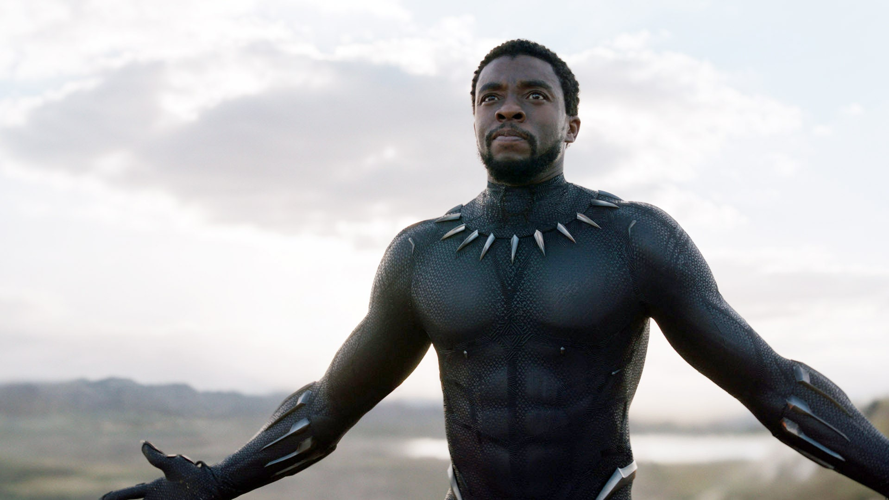
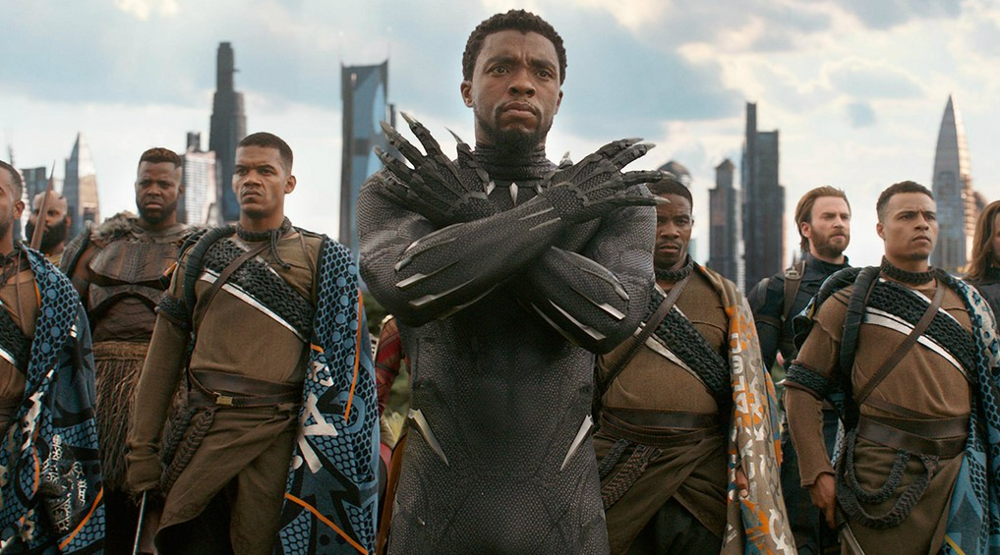

Chadwick Boseman had early success as a stage actor, writer and director, before landing gigs on TV shows like Lincoln Heights. Boseman broke through with his big screen portrayals of two African American icons: baseball player Jackie Robinson in 42, and soul singer James Brown in Get on Up. Boseman later took on the role of Black Panther for a series of Marvel superhero films, including the immensely successful Black Panther in early 2018.
Black Panther Legacy
Boseman’s portrayal of T’Challa, the King of Wakanda, became a cultural phenomenon. Boseman’s poise and command of the screen latched on to the zeitgeist of a world being divided by political, social and cultural identities — as the United States was grappling with racism and xenophobia two years into President Donald Trump’s first term.
Future of the Black Panther
In an interview Coogler had this to say about Chadwick Boseman's passing, "But he affected the world, man. When you experience trauma, oftentimes it happens like a bomb. And sometimes, people are right there in that blast radius. A lot of us were there in the radius of it; we knew him. We worked with him for years and forged a bond with him that can only be forged through working on something that everybody cares about passionately." The director also said that the actor would want the Black Panther franchise to continue in his absence. Black Panther: Wakanda Forever did a beautiful job of honoring Chadwick Boseman's legacy both on screen and behind the scenes — and the heartbreak felt by the crew and his former costars is palpable. Boseman and T'Challa are intrinsically linked, and Black Panther 2 never lost sight of this.